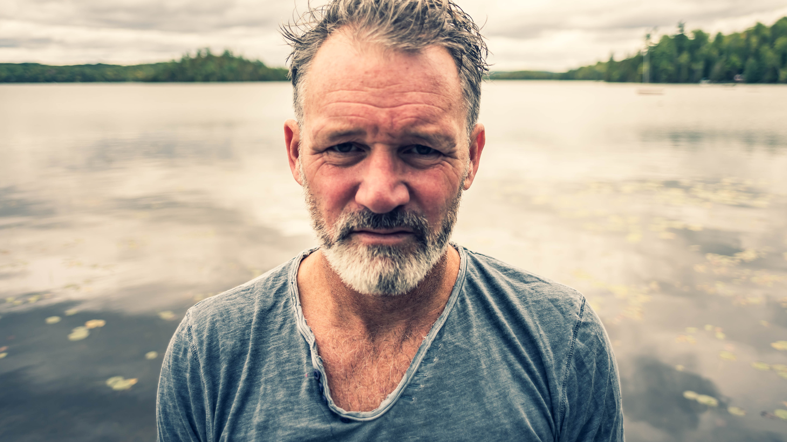
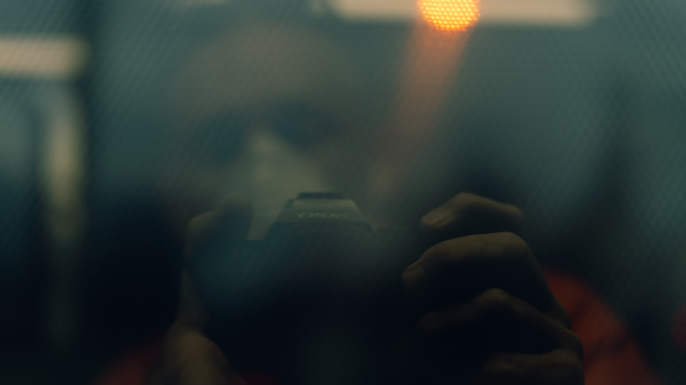
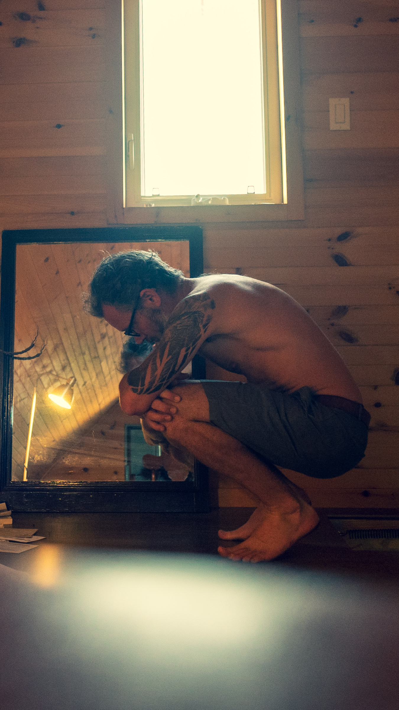
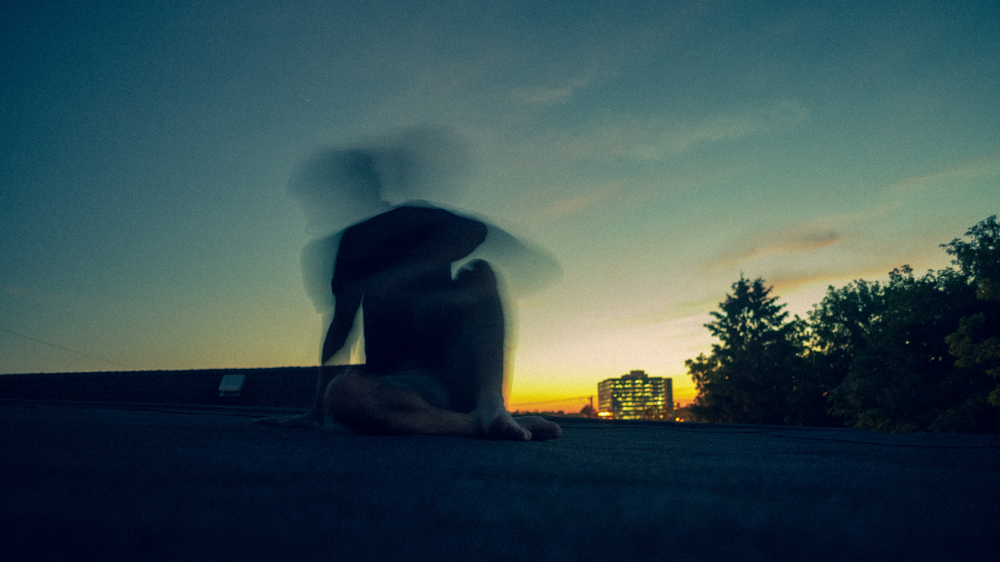
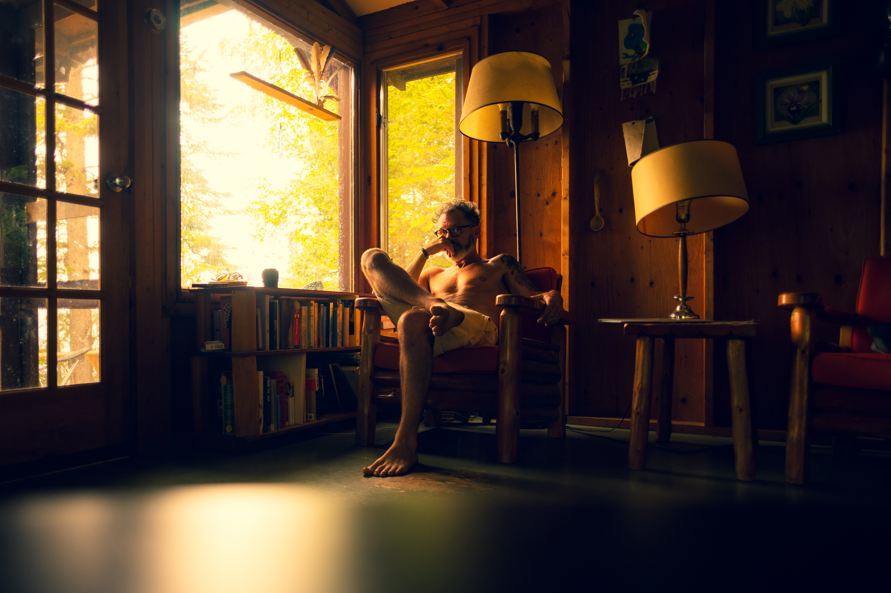

Concussion
In the winter of 2019 I hit my head on the bottom of the ocean and suffered from post-concussion symptoms that lasted for about half a year. In the spring of 2020, I was in a car accident, and the concussion symptoms returned.
The experience was of closing. I lost peripheral vision and it felt as though I were in a tunnel. Screens were difficult to look at. I could no longer read books or sit through a complete television show.
I did not think there was anything to learn or share about my concussions. It was a dull, quiet, painful and lonely experience.
A solidarity exists among concussion sufferers. I was introduced to a photographer who created images that reflected his concussion experience. The images I'm sharing here were a response to his photographs, specifically to the challenge of expressing something outward that is the consequence of an inward turn.
Everything changes, and in retrospect, I see that tunnel vision may have helped me focus on the texture of things, to see differently.




